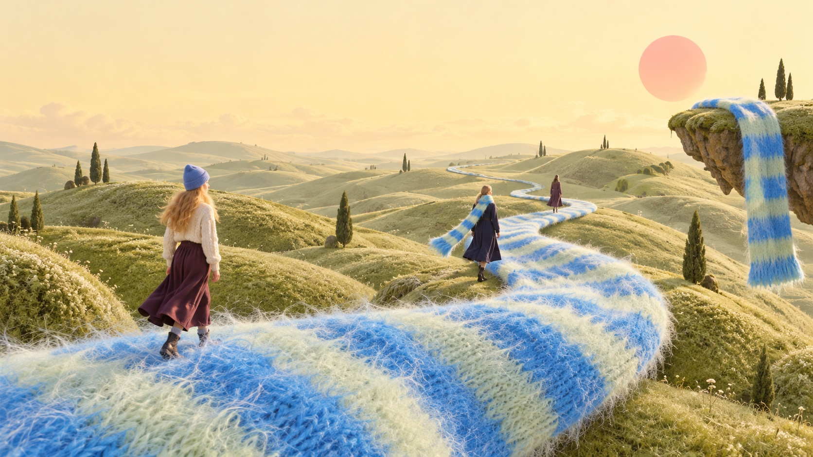

A little colour. A world of possibility.
a knitteddaydream.
the feeling↘MOSSYLOOM / A WORLD IN KNIT
It starts with a stripe
Small piece.
Big imagination.
A favourite colour can take you places.
Start here. See where it goes.
a very real
little daydream ↗
little daydream ↗
Pieces to get lost in
Soft things.
Happy thoughts.
Where will you wander?